The Optics Panel¶
The Optics panel is where the computed optics are visualised and compared against the nominal model, but also against one another.
It serves as the launch point for follow-up actions such as calculating corrections, starting the Segment-by-Segment GUI, etc.
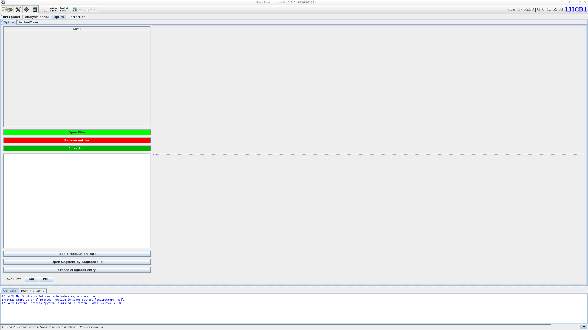
Optics panel's default appearance.The panel is split into two sub-tabs: Optics and Action/Tune.
The default view of the Optics panel is the Optics tab, covered by this page, which lists analyses and displays computed properties.
See the Amplitude Detuning page for the Action/Tune tab.
Loading Data¶
Once an optics analysis has finished, its results are automatically loaded and a new entry will appear in the Name table at the top left of the tab.
Buttons below this table provide functionality to manually load files and remove entries.
-
: Opens a dialogue to select one or more optics analysis output folders to be loaded. The files will be copied into the
Resultsfolder and opened from there. A popup will ask what to do about the associated model, see the admonition below.Associated Models
When the import is done, a new popup asks for the action to perform regarding the loaded analysis' associated model, one can:
- Link Model: creates a symlink to the original model folder. This is fragile, as the link breaks if the original folder is moved or deleted.
- Copy Model: copies all the model's files alongside the loaded analysis. This is the recommended option.
- Close: closes the popup and drops the matter about the associated model. Can lead to out of sync models as well.
Beware that loading an analysis also loads its associated model, which then becomes the active model in the GUI. Any new analysis performed afterwards will use this model unless it is changed: remember to switch back to the appropriate model before running further analyses. The currently active model (now the loaded one) is displayed in the top bar of the GUI, which is the quickest way to check the intended one is selected.
-
: Removes the selected entries from the table. A dialogue will prompt to choose between removing only the entry from the table (recommended) or also deleting the associated files and folder from disk (which has its uses in case of incorrect analysis settings etc.).
Loading Legacy Files
It is possible to load the older Beta-Beat.src output directories to compare results from the old analysis codes.
Since Beta-Beat.src had different file naming conventions, the GUI should automatically call the dedicated betabeatsrc_output_converter script before loading data.
See the meaning of the Beta-Beat.src output files for details.
The loaded analysis name should be unchanged.
Viewing Results¶
Selecting a row in the Name table loads the associated data.
On the lower left a tree allows to choose which quantity to plot for the selected result(s).
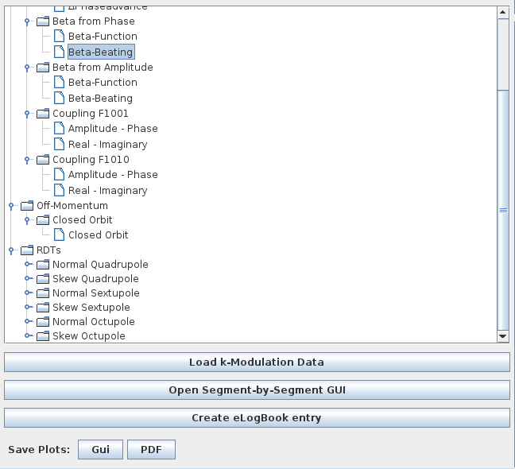
RDTs branch.Dynamic Entries
While linear optics are always computed and present, the RDTs and CRDTs branches are added dynamically, depending on which files are present in the results folders.
Similarly, normalised dispersion results are only available after on-off momentum analysis.
Any of these quantities that was not computed during the analysis will therefore not appear in the tree.
When selecting a quantity, its values appear in the plot area in the right part of the window, across the longitudinal location in the machine. Interaction Points are marked along the top and a collapsible legend identifying each result is added. The plot supports the usual navigation and inspection shortcuts common to all panels.
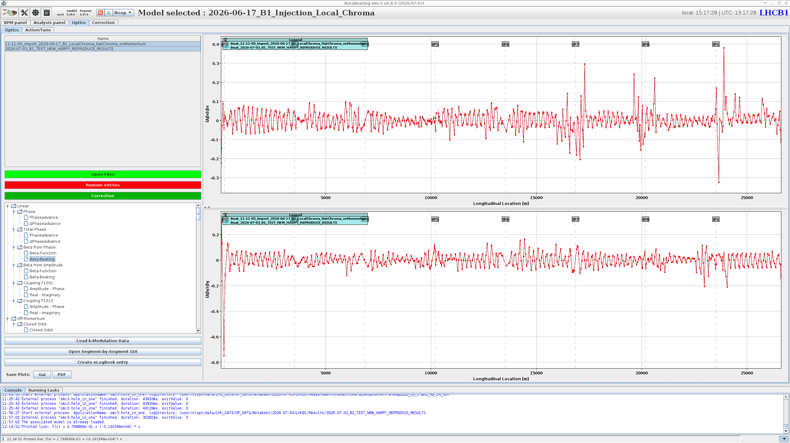
Optics panel, here showing the horizontal and vertical beta-beating for two loaded results.Most shown quantities are computed for both transverse planes and display two plots, one for each of horizontal and vertical. Some quantities offer alternative layouts, for instance RDTs can be plotted as either amplitude and phase or real and imaginary parts.
Selecting several rows overlays them on the same plot, which allows comparing several measurements or analyses of the same measurements with different settings and/or models. Each result is assigned a colour, shown in the plot legend to identify the corresponding curve.
Shown Models
Most linear quantities can be shown either by themselves (e.g. beta-beating) or against the model values (e.g. beta-function itself). When choosing the latter, a line is added to the plot corresponding to the model values, with an associated legend. When selecting several measurements a line will be added for each of the measurements and each of the models.
Additional Actions¶
Below the property tree are several buttons for additional actions.
Saving Plots¶
The Save Plots row at the bottom left allows exporting the currently displayed plots, in one of two ways:
- The Gui button saves them in the native GUI format, a.k.a. a
PNGimage similar to taking a screenshot of the plots area. - The PDF button starts a Python program to load the data, plots it via
matplotlibwith our custom styles, and export it as aPDFfile. In this mode it is possible to set axes limits and assign custom labels to plotted measurements.
In both cases a dialogue will pop up prompting the user to choose where on disk to create the file.
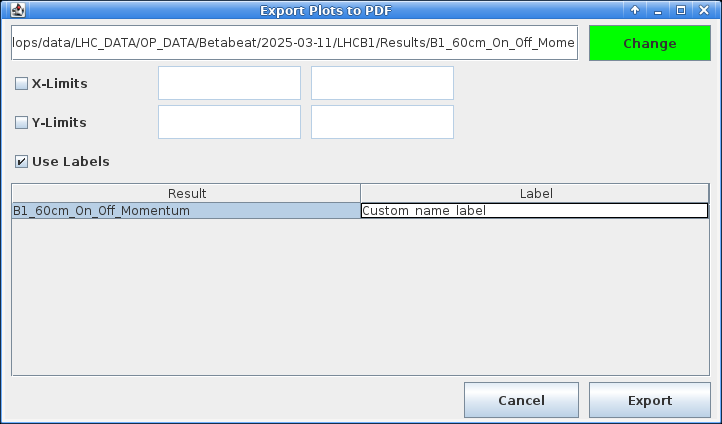
PDF plot export.Creating an eLogbook Entry¶
The Create eLogBook entry button is a shortcut to generate an optics analysis entry in the logbook.
It opens the New Logbook Entry dialogue, pre-filled with the analysis title as well as the model and measurement paths of the selected result(s).
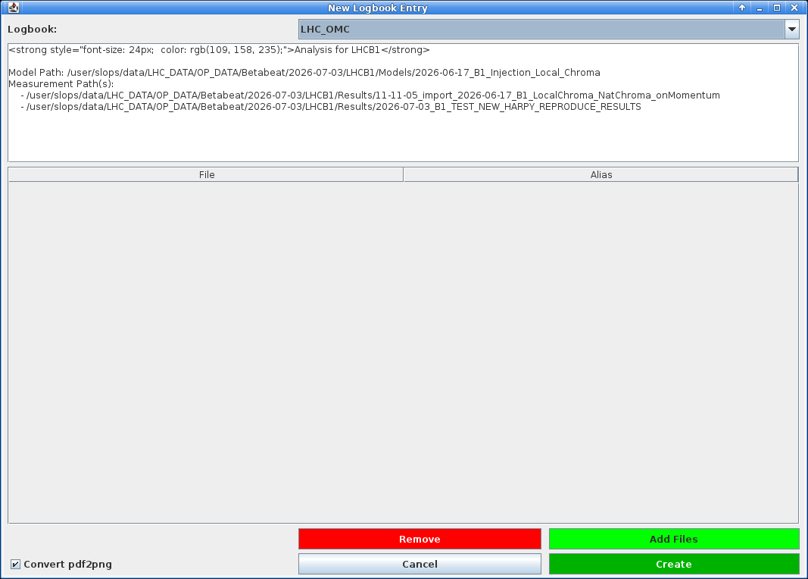
New Logbook Entry dialogue, pre-filled from the selected results.Choose the target logbook from the dropdown (defaults to the LHC_OMC logbook), edit the entry text if needed, and attach files with Add Files (or drop unwanted ones with Remove).
This would typically be plots exported from the optics analysis.
When done, click Create to publish the entry.
PDF Attachments
The Convert pdf2png checkbox converts attached PDF files to PNG images, so that they display inline in the logbook entry rather than as attachments.
Loading K-Modulation Data¶
The Load k-Modulation Data button opens a file dialogue to select a k-modulation results directory.
The chosen directory should contain subdirectories named IP* with k-modulation results for said IPs.
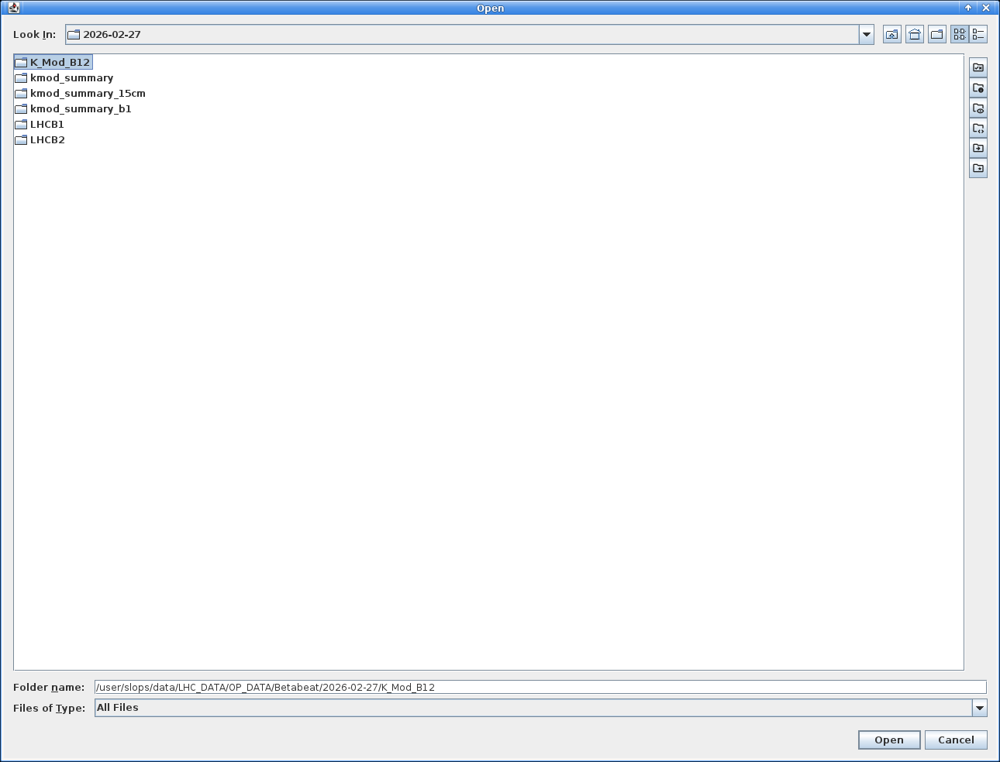
The imported k-modulation results will supersede the optics functions at the inner triplet BPMs and add a data point at IP locations. This is advantageous considering the k-modulation results are more accurate than optics measurements in these areas. See the K-Modulation GUI pages to run a k-modulation.
Opening the Segment-by-Segment GUI¶
The Open Segment-by-Segment GUI button launches the segment-by-segment GUI for the selected result(s), pre-loaded with their optics and associated model. This is the recommended way to start this GUI. Refer to the Segment-by-Segment GUI pages for how to use the method.
Computing Global Corrections¶
Once the optics have been measured, one can compute a global correction to try and compensate the observed optics deviation throughout the whole machine.
The button, found with the loading buttons above the property tree, opens the Global Correction dialogue, used to compute optics corrections from the loaded measurement and a response matrix.
It is organised into three parts.
Full Response Needed
Please note that corrections require the existence of the response matrices (Full Response option during model creation).
Should that have been forgotten or omitted, it can be done at this step as well, see the full response section below.
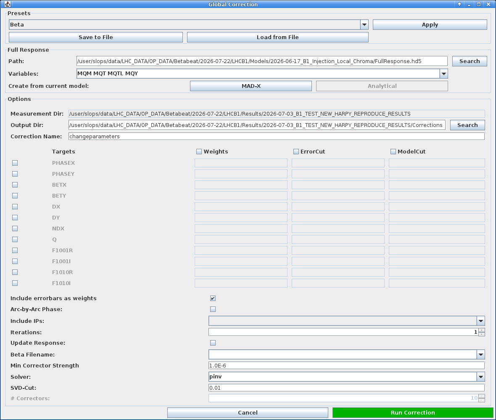
Global Correction dialogue as it opens, with its presets, full response and options sections.Presets¶
At the top of the dialogue, a dropdown offers presets (such as Beta, Coupling, etc.) that pre-fill the whole dialogue with default values for a given correction type.
After choosing from the list, click the Apply button for the selected preset to take effect.
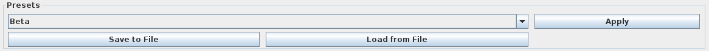
Apply button.It is possible at any point to export the current option choices for the full dialogue as a personal preset with the Save to File button. Similarly, it is possible to apply previously saved ones with Load from File which will open a file selection dialogue.
The two tabs below show the same dialogue with two different presets applied.
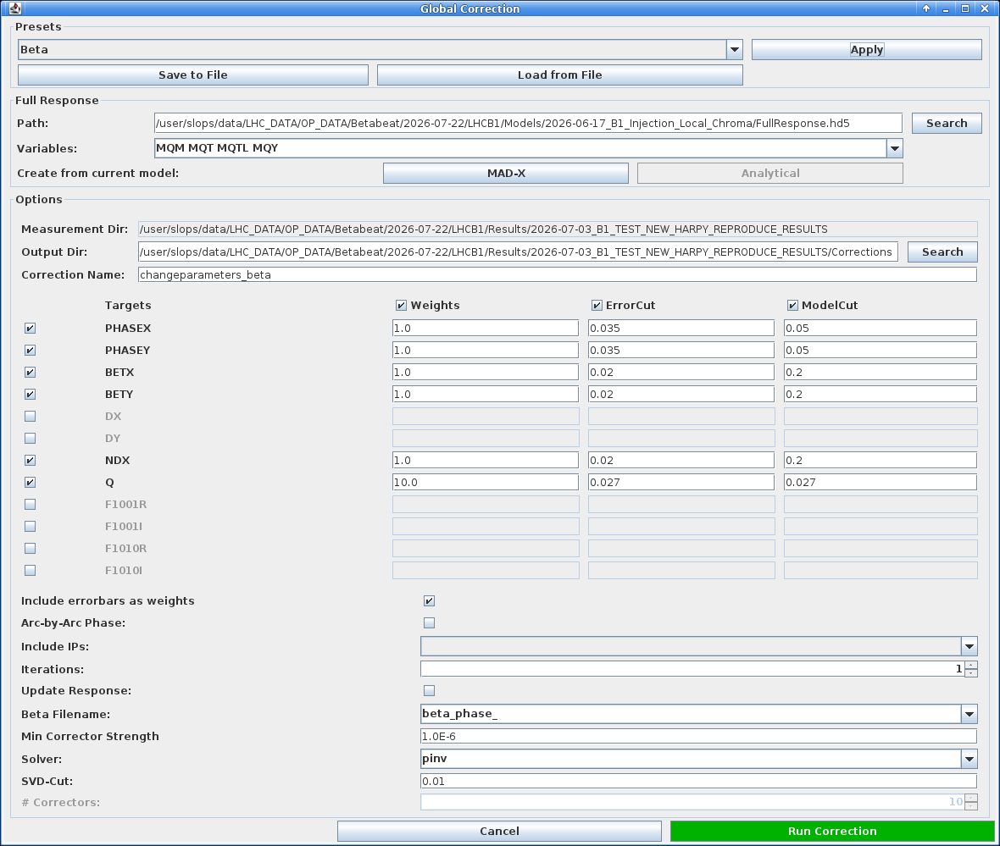Global Correction dialogue with the Beta preset.
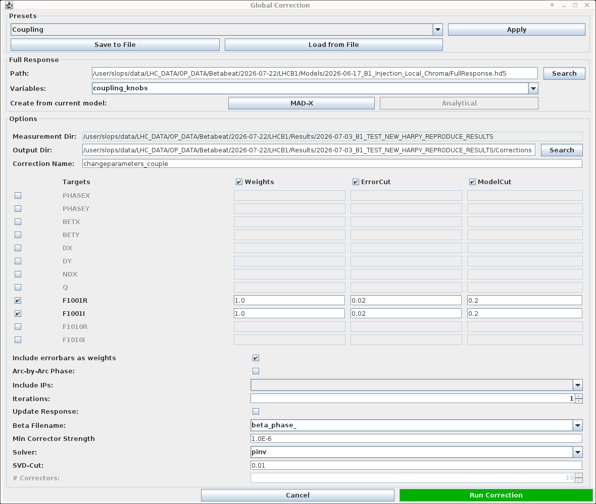Global Correction dialogue with the Coupling preset, targeting the F1001 real and imaginary parts.
Tweak to Your Needs
Note that there isn't a preset for every type of correction and one might need to tweak things to their needs. For instance, one cannot select a preset to perform a chromatic coupling correction, but it can be done by providing the variable group of skew sextupole correctors. Then tweaking the parameter table might be needed to obtain a satisfying correction.
Full Response¶
The second section offers to choose where to load the response matrices (a FullResponse.hd5 file) and which correction Variables (knobs) to use.
This is set by default to the options selected in the model creation.
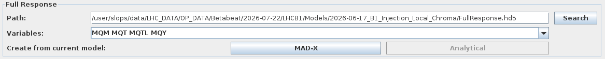
Variables are chosen.Full Response on the Fly
It is possible to create response matrices from the selected model by clicking the MAD-X button to the right of Create from current model.
Please note that this will start the full response process but will not give the option to choose the step size.
To have this control, one needs to generate response matrices during model creation.
The Analytical option is currently not implemented.
Alternatively, any valid response file (in the expected .hd5 format) can be loaded and used.
Options¶
The last section is itself split into three parts.
First, it allows setting the measurement and output directories (by default uses a Corrections subdirectory in the results folder) as well as the correction name (e.g. changeparameters).
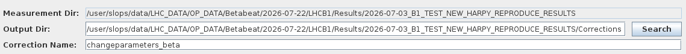
Second, an editable table lets the user choose which parameters to correct by ticking a box next to their name in the Targets column.
For each observable, a Weights, ErrorCut and ModelCut column can be ticked as well and values to be used can be manually entered in the relevant boxes.
These values are directly passed on to the correction calculation process.
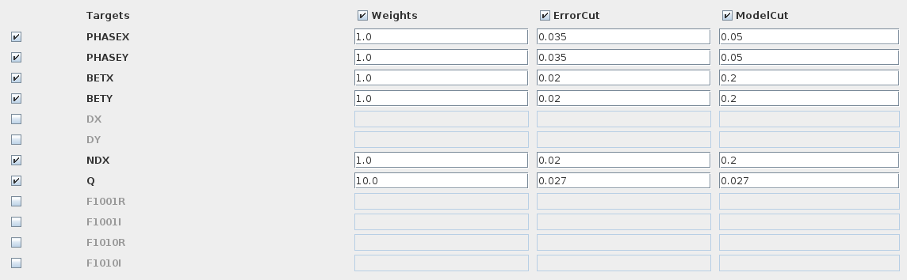
Targets column and their Weights, ErrorCut and ModelCut values set.Finally is a list of options to be selected or specified in order to control the solver process.
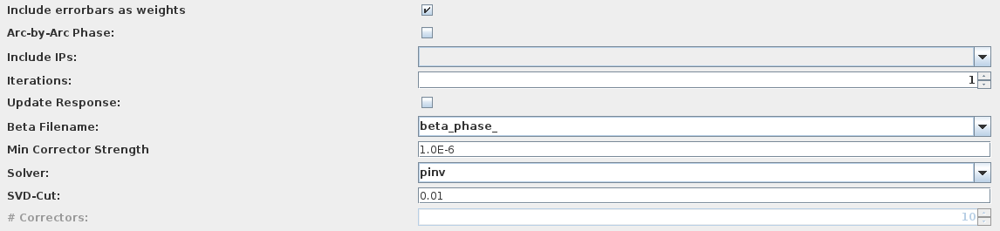
Their meanings are:
- Include errorbars as weights: whether to take into account the measured error bars in the correction calculation. This is active by default.
- Arc-by-Arc Phase: if this option (off by default) is selected, the solver will aim to correct the total phase advance per arc instead of correcting the phase advance between consecutive BPMs.
- Include IPs: a dropdown list which lets one include IPs in the arc-by-arc phase correction. Providing
leftincludes the IP left of the arc, andrightincludes the IP right of the arc. This has no selection by default. - Iterations: the maximum number of correction iterations to perform. At each re-iteration the model is recomputed.
- Update Response: only accessible if
Iterations>1. If ticked (off by default), at each iteration recompute the response matrices analytically. - Beta Filename: the filename prefix of the disk files to use for the measured beta-function values. This defaults to using the beta from phase values rather than beta from amplitude.
- Min Corrector Strength: the minimum (absolute) strength of correctors to be used in the correction.
- Solver: which optimisation method to use in the calculation. This defaults to
pinvfor pseudo-inverse matrix use, and can otherwise beompfor orthogonal matching pursuit, which is the basis of theMICADOalgorithm. - SVD-Cut: the cutoff for small singular values of the pseudo inverse matrix (only available when choosing
pinvsolver). Any singular value smaller than \(r_{\text{cond}} \times max(\text{singular values})\) will be set to 0 (where \(r_{\text{cond}}\) is the provided SVD-Cut). - # Correctors: the maximum number of correctors to use, only available when choosing the orthogonal matching pursuit solver.
Clicking starts the Python process which will write the calculated corrections to the changeparameters files in the correction directory.
These files contain the magnet names and their correction strengths (powering changes).
Its progress can be followed in the running tasks, and any logs or errors will be reported in the console.
These corrections can then be inspected and tested in the Correction Panel: see checking corrections on the next page.